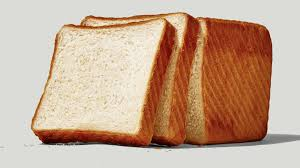
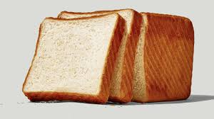

Welcome to Inaya's FOOD & GROCERY!
 


Discover a world where quality meets community at AAS FOOD & GROCERY. We're not just a grocery store; we're your culinary partner on a journey of flavors and freshness.
Our Story
AAS FOOD & GROCERY was born from a shared passion for exceptional ingredients and a desire to bring people together through the joy of cooking. Our founders envisioned a space where every kitchen could thrive with the finest, handpicked products.
What Sets Us Apart
Quality Assurance:
We curate our shelves with a commitment to excellence, ensuring that
every item meets the highest standards of freshness and quality.
Community Connection:
More than a store, we're a community hub. Our knowledgeable staff is
here to inspire and assist, making your shopping experience delightful
and memorable.
Diverse Selection:
Explore a diverse range of products, from pantry staples to unique
finds, designed to elevate your culinary adventures.
Join Us on the Journey
Whether you're a seasoned chef or a home cook exploring new recipes, Inaya's FOOD & GROCERY is your destination for exceptional ingredients and warm community vibes. Come, be a part of our story, and let's create delicious moments together. Inaya's FOOD & GROCERY—Where Quality Meets Community!